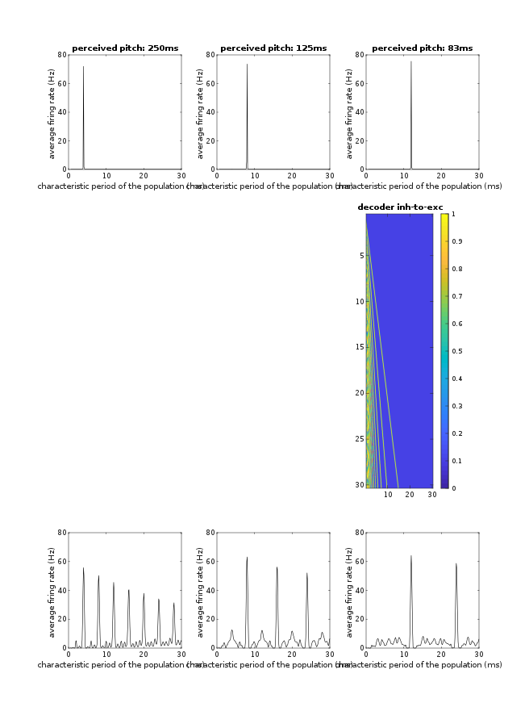
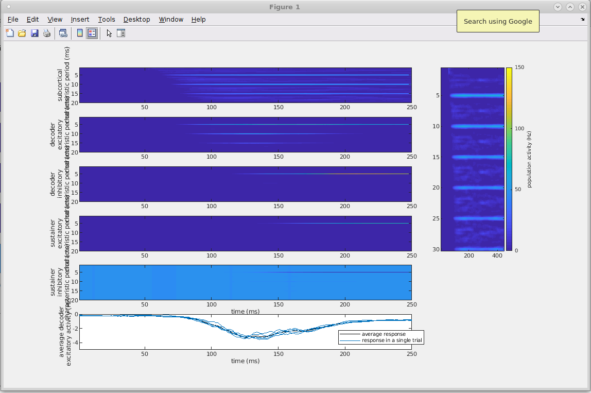

This is the model code associated with the paper:
Tabas A, Andermann M, Schuberth V, Riedel H, Balaguer-Ballester E, Rupp A (2019)
Modeling and MEG evidence of early consonance processing in auditory cortex.
PLoS Comput Biol 15(2): e1006820
https://doi.org/10.1371/journal.pcbi.1006820
This code was contributed by Alejandro Tabas.
--- Installation ---
These instructions are written for UNIX, but tranferring them to a windows system should be trivial. The libs were tested in both, Linux and Windows.
This libs use both MATLAB and python. MATLAB is the main wrapper and everything can be run from there. Python is used to compute the output of the peripheral system and the cortical input. The peripheral system runs from a external library contained in the pip package cochlea, which in turn uses thorns to adjust the stimulus loudness. You will need both. The code runs in python 2.7.
First, install cochlea and thorns using pip:
$ pip install thorns
$ pip install cochlea
or
python -m pip install thorns --user
python -m pip install cochlea --user
Next, set line 54 in tdoch.m to point to your python installation. Just "python" should work in most systems. I wrote a few extra tips in the comments preceding the line in case that does not work. You must be able to run python and import cochlea from matlab using
>>> system(pythonCommandString)
That's it!
--- Usage ---
The model wrapper is tdoch.m. Thorought examples reproducing the figures shown in the original paper are available in the folder "examples-from-the-paper". Some easy UNIX-to-windows modifications might be necessary to make the functions work in windows O:).
Add the paths to example-from-the-paper and the top-level folders and then run the examples-from-the-paper matlab scripts, for example:
addpath(pwd)
addpath([pwd '/examples-from-the-paper'])
fig1
This should generate figures (in about 28 minutes) and store them in the top level folder similar to fig 1 in the paper:

fig2
produces (in about 15 minutes) this figure similar to fig 2 in the paper:

Have fun!
--- Citation ---
If you use the model, please cite the original publication with the formulation of the model: https://doi.org/10.1371/journal.pcbi.1006820